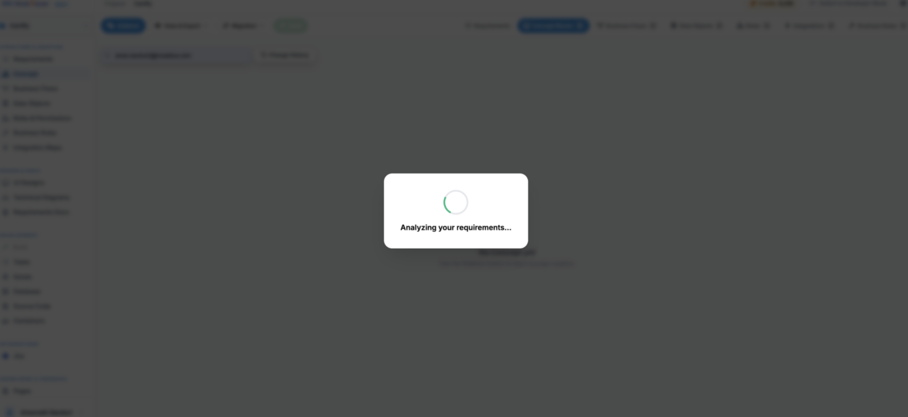
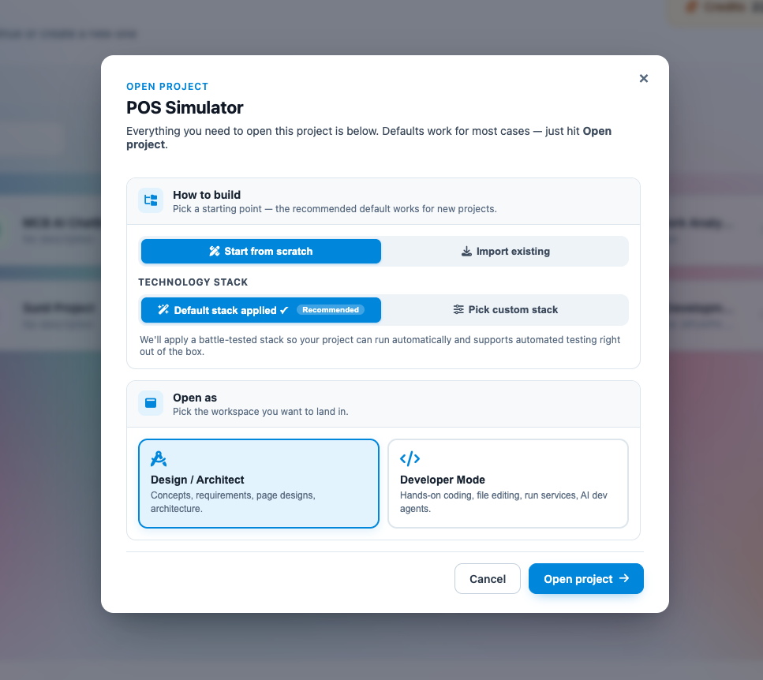
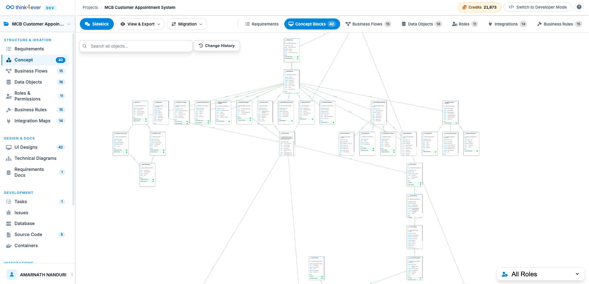

Create a New Project
The New Project screen allows users to describe the application, platform, or solution they want to build. Simply enter a business idea, project requirements, or technical specifications in the description field.
The platform analyzes the provided information and automatically determines the most suitable project setup, including project naming, recommended development approach, and initial project structure.
Users may also specify existing assets such as source code, a Git repository, preferred technologies, or implementation requirements. Based on the provided input, the system guides users through the appropriate project creation workflow.
After entering the project details, click Continue to proceed with project generation and setup.
How to Create a New Project
- In the Dashboard, click on Create a New Project button
- Describe the project you want to create.
-
Click on Continue button.

-
The application will analyze the description of the app and will
generate suggestion, thus this screen popup will appear.

- Select any option or simply choose the recommended option, then tap on Open Architect button.
-
AI will generate a couple of questions for
Requirements Analysis

- Once all set, click on Submit Answers button.
-
Once all set, a summary of requirements will be generated for
your review and approval to build the app.

-
Think4ever will analyze the requirements for a few minutes.

Once the initial build of the project has been generated, user can modify it with many options or simply chatting with sidekick = our AI assistant!
Project Initialization Options
When opening an empty project for the first time, you must select the origin path for your codebase and architecture layout. The system provides two primary initialization paths:
1. Start from Scratch
Icon:Magic wand / drafting pen.
Description: Select this option to initialize your project with a completely blank workspace. It is ideal when you want to design a brand-new architecture and allow the AI agents to build out system components from a completely fresh canvas.
2. Import an Existing Project
Icon:Download / inbox arrow.
Description: Select this option to bring an established codebase into the workspace. The system allows you to import source code directly from version control, link a public GitHub repository, or upload a local ZIP archive containing your existing project files.

Open an Existing Project – Design Mode
When you open a project from your dashboard, the system provides a dual-entry selection modal. This allows you to choose an interface style tailored to your current role and objective.
Design/Architect Mode
Solutions Design Library
When launching the Visual Concept Designer for a project, the system provides five tailored entry paths to begin building your conceptual diagram called Solutions Design Library

Other Components
-
Chat with AI Sidekick
- Icon: Purple speech bubbles.
- Description: Ideal for a conversational, text-based approach. Describe your project idea using natural language, and the AI agent will automatically construct the corresponding concept diagram for you.
-
Voice Assistant
- Icon: Pink microphone.
- Description: Designed for hands-free, real-time ideation. Speak your product concepts out loud, and watch as the AI maps and renders your layout dynamically on the canvas as you talk.
-
Analyze Requirements
- Icon: Blue lightbulb.
- Description: Best for structured project planning. Enter your preliminary product requirements, and the AI will ask clarifying questions to fill in the gaps and build out a comprehensive concept map.
-
Add Block Manually
- Icon: Teal plus sign.
- Description: Built for fine-grained, manual control. Skip the AI assistance and map out your concept structure block-by-block with complete authority over every component.
-
Import from Files
- Icon: Orange document upload arrow.
- Description: Tailored for working with existing project documentation. Attach text files—such as requirements documents, technical specifications, or engineering notes—and allow the AI to extract and generate the concept structure directly from your uploaded materials.
💡 Tip: If you prefer to enter the canvas directly without choosing an initialization wizard, click Skip for now at the bottom of the modal.